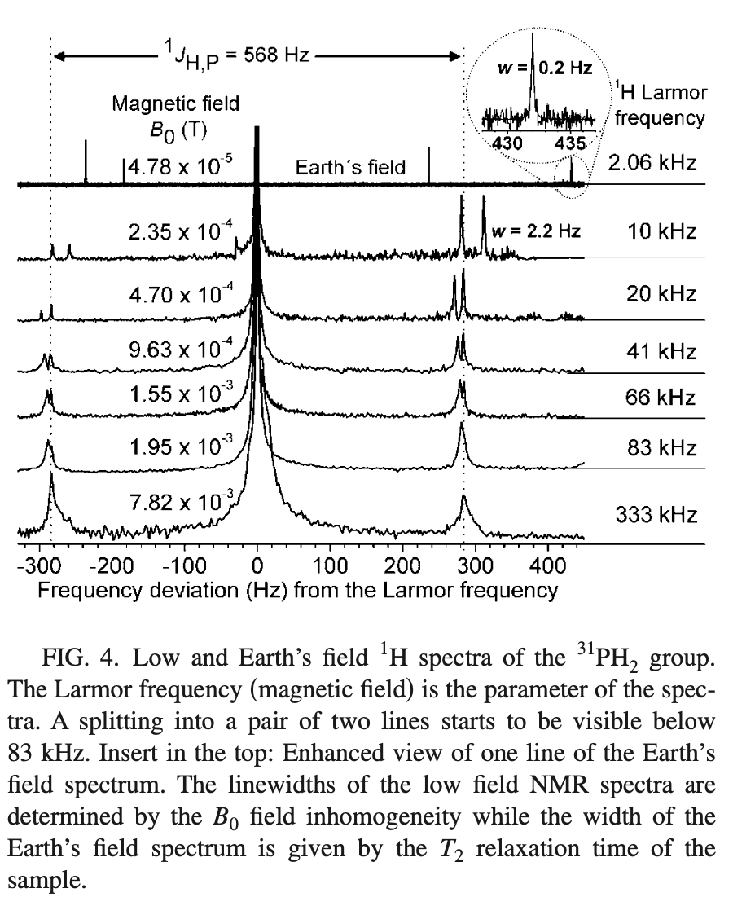

I have been studying Earth’s Field NMR for a bit now. The other day I came across a paper that clued me into some additional interesting features of EF-NMR I was not aware of.
As all organic chemists know, in NMR we use the \(n + 1\) rule to determine splitting, and Pascal’s triangle as a nemonic to remember the relative areas of the peaks within a multiplet. For instance, we expect that the \(\ce{CH3}\) group in ethanol to be a triplet with areas 1:2:1, due to the \(\ce{CH3}\) group having two proton neighbors in the \(\ce{CH2}\) group. We treat the two protons in \(\ce{CH2}\) as magnetically equivalent.
J-Coupled Specta
The \(n+1\) rule works at typical fields used for structural determination, let’s say 60 MHz and above.1 At these fields one is working in the so-called “weak coupling” region. However, as one lowers the field to really low values, one encounters the “strong coupling” region, where one observes “J-coupled-spectra” or JCS. Under strong coupling, the \(\ce{CH2}\) protons in ethanol are no longer magnetically equivalent, and each of them couples differently to other nuclei, and the \(n + 1\) rule breaks down.
The strict requirement for JCS is that there be two or more protons attached to a spin \(\frac{1}{2}\) heteroatom and the magnetic field be quite small. For a simple system, let’s say \(\ce{H_i\bond{-}X\bond{-} H_j}\), the strict requirement to see separate lines for the no-longer-equivalent protons is:
If this seems a bit strange, well, 1) it is, and 2) it has always been the case that the “equivalent” protons in for example a \(\ce{CH2}\) group do couple, we just don’t normally see it or worry about it.2
How Small is Small?
How small does the magnetic field have to be for J-coupled spectra to appear? This is covered in detail in Appelt et al. (2010) but generally speaking JCS appear at around \(10^{-6}\) to \(10^{-4}\) Tesla.3 The magnetic field of earth is around 50 mT, right in the sweet spot. The Larmor resonance frequency for \(\ce{^{1}H}\) at this field strength is around 2 kHz.
What Replaces the \(n + 1\) Rule?
In the case of a system like \(\ce{X\bond{-}H_N}\), the number of lines that will be observed is
\[
\textrm{no. of lines} = 2 \sum_{n = 1, n \in U}^{N}N - n + 1
\]
Where \(U\) is the set of odd numbers (for odd \(N\), one evaluates until \(N -n = 0\); for even \(N\), evaluate until \(N-n=1\)). The leading multiplier of 2 accounts for the doublet due to \(\ce{J_{XH}}\). This formula doesn’t exactly roll off the tongue. We can evaluate it to get the first few terms:
N <-5L # evaluate 1:N termsno.lines <-rep(NA_integer_, N) # initialize storagefor (i in1:N) { odd <- (1:i) %%2 n <- (1:i)[as.logical(odd)] # get odd n no larger than N no.lines[i] <-sum(i - n +1) # take advantage of R's vectorization}names(no.lines) <-paste("N=", 1:N, sep ="") # pretty it upno.lines <- no.lines *2# account for J_HXno.lines
N=1 N=2 N=3 N=4 N=5
2 4 8 12 18
Examples
A couple of examples should clarify the situation. All of these will be from the perspective of observing \(\ce{^{1}H}\).4 These examples are taken from Appelt et al. (2007).
\(\ce{PH2}\)
At high field the \(\ce{^{1}H}\) spectrum of \(\ce{PH2}\) would be a symmetric doublet with a peak separation of \(\ce{J_{PH}}\).
In earth’s field, the spectrum is first split into a doublet by \(\ce{J_{PH}}\), but the spacing is not symmetric. Then, each part of the doublet is split further into two peaks, also asymmetrically and with varying linewidths. Figure 1 shows how the splitting changes as a function of field strength. Note that in the strong coupling region there are four peaks, as predicted above.

Figure 1: Figure 4 from Appelt et al. (2007), showing the field dependence of the \(\ce{PH2}\) spectrum.
\(\ce{CH3OH}\)
For the case of methanol in Earth’s field, the spectrum is first asymmetrically split by the \(\ce{^{13}C}\) with spacing \(\ce{J_{CH}}\). Then each part of the doublet is further split into four peaks. Figure 2 shows the EF spectrum of methanol. The asymmetry of the line spacing and line widths is apparent.
Figure 2: Figure 5 from Appelt et al. (2007), showing the spectrum of methanol.
Further Reading
For a broad overview of this topic, take a look at Kaseman et al. (2020); for a detailed walk-through of the theory with many more examples, see Appelt et al. (2007), and other papers by Appelt et al. Be prepared to spend some time with these papers.
References
Appelt, Stephan, F. Wolfgang Häsing, Holger Kühn, and Bernhard Blümich. 2007. “Phenomena in \(J\)-Coupled Nuclear Magnetic Resonance Spectroscopy in Low Magnetic Fields.”Phys. Rev. A 76 (August): 023420. https://doi.org/10.1103/PhysRevA.76.023420.
Appelt, Stephan, F. W. Häsing, U. Sieling, A. Gordji-Nejad, S. Glöggler, and B. Blümich. 2010. “Paths from Weak to Strong Coupling in NMR.”Phys. Rev. A 81 (February): 023420. https://doi.org/10.1103/PhysRevA.81.023420.
Kaseman, Derrick C., Per E. Magnelind, Scarlett Widgeon Paisner, Jacob L. Yoder, Marc Alvarez, Algis V. Urbaitis, Michael T. Janicke, Pulak Nath, Michelle A. Espy, and Robert F. Williams. 2020. “Design and implementation of a J-coupled spectrometer for multidimensional structure and relaxation detection at low magnetic fields.”Review of Scientific Instruments 91 (5): 054103. https://doi.org/10.1063/1.5130391.
Footnotes
60 MHz chosen simply because commercial instruments have been available at that field for forever.↩︎
The protons in something like \(\ce{CH2Cl2}\) actually do couple to each other. With a little trick, you can measure \(J_{HH}\).↩︎
This is a general trend. The exact boundaries between various coupling regimes depends on the nuclei involved, the coupling constants and the peak separation in Larmor frequency (in Hz).↩︎
Remember, signals are very weak at EF so observing heteronuclei is significantly more challenging. See the previous post for details.↩︎